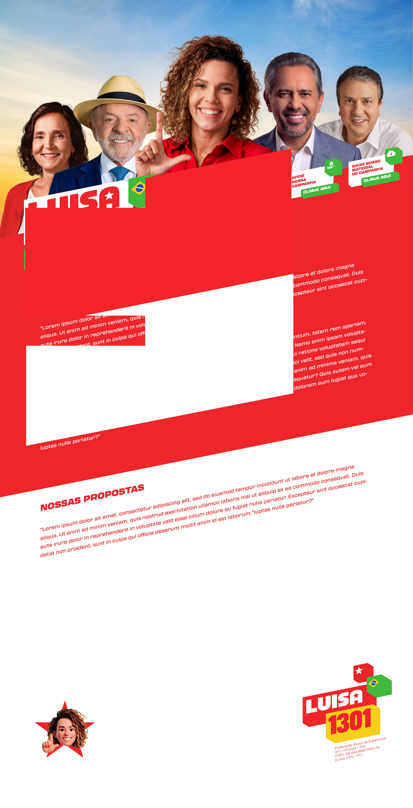

Luisa é de Sobral. Psicóloga formada pela UFC, com mestrado em Saúde da Família, começou sua militância ainda estudante e construiu sua trajetória em políticas de juventude, cultura e territórios.
Trabalhou nos Cucas, no Centro Cultural Bom Jardim e foi Secretária da Cultura do Ceará. Sua atuação é marcada pela defesa de políticas públicas que ampliem oportunidades, renda, dignidade e participação das mulheres.
Seu projeto é levar essa experiência para Brasília e representar o Ceará com presença, trabalho e compromisso com a vida real das pessoas.
Luisa quer representar o Ceará em Brasília com quatro prioridades: autonomia econômica e participação política para as mulheres; defesa das políticas do governo Lula; fortalecimento da educação pública e das oportunidades para as juventudes; e cultura e territórios como caminhos para trabalho, renda e desenvolvimento.